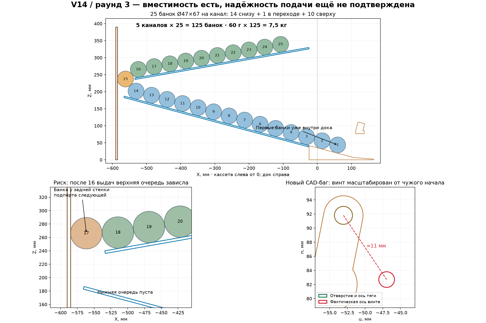

V14: полный аудит под 25 × 5 = 125 банок
30.09.2026 · раунд 3 · генератор от 21:19:39, STL и оба HTML от 21:19:46. Путь проекта: v14_кассета_ПНД4.
Вердикт: 125 банок геометрически размещаются, но работа полной кассеты пока не подтверждена. Старые столкновения вкладышей, ручки и держателя устранены. При новой двухъярусной проверке обнаружен устойчивый риск зависания очереди в заднем переходе. Кроме того, винт качалки ошибочно смещён в CAD примерно на 11 мм; тяга всё ещё касается модели вала; найденный софт не гарантирует удержание полной очереди после цикла. Полный пятиканальный комплект нельзя объявлять готовым только по boolean-проверкам и анимации.
Принятые обязательные условия
| Количество | 5 независимых каналов, по 25 банок = 125 банок. |
|---|
| Масса, подтверждённая пользователем | До 60 г на наполненную банку; 1,5 кг на канал; 7,5 кг только банки. Вес картона, ПНД, печати и электроники добавляется. |
|---|
| Опора, уточнённая пользователем | Кассета и весь док целиком стоят на общей плоскости; снизу при необходимости подложена опора. Свес и опрокидывающий момент не закладывались в эту проверку. |
|---|
| Банки в текущем генераторе | Номинально Ø47×67 мм. Дополнительно проверены Ø49×70 и Ø50×72. В старом README встречается длина 70 вместо 67; проверка разных случаев не заменяет замер самой большой реальной крышки/корпуса. |
|---|
| Кассета | 590×405×390; 5 каналов по 75 мм при картоне 5 мм; шаг 80 мм; ПНД 4 мм; нижний скат 15°, верхний 10°. |
|---|
| Механизм | MG996R по проекту; плечо тяги на покупной качалке 10 мм; тяга 55,5 мм; коромысло −28…+28°; требуемый геометрический ход сервы ≈105°, не старые 80°. |
|---|
Закрытие шести замечаний прошлого раунда
| Замечание | Результат независимой проверки | Статус |
|---|
| Узкий вкладыш / стенка | Все шесть комбинаций калибр/зеркальность: 0 мм³. Извлечённый узкий вкладыш реального тестового STL тоже даёт 0. | Объёмный конфликт закрыт. По X осталась посадка встык без запаса: вкладыш до 20, стенка от 20. |
| Ручка замка / балка | 0,924 мм³ только на двух горбиках snap-fit. Старое перекрытие ручки отсутствует. | Закрыт. Замок цельный; реальные допуски печати проверять отдельно. |
| Держатель / балка | 0 мм³. Вертикальное опускание держателя проверено на 11 высотах — без столкновений. | Закрыт номинально. Минимальный зазор в прежнем углу лишь около 0,132 мм по n. |
| Качалка 9 / расчёт 10 | Центр её отверстия теперь совпадает с расчётной осью тяги. Но вместе с ней неправильно масштабирован отдельный винт. | Отверстие исправлено, цифровая сборка шарнира сломана новым смещением. |
| Проставка на качалке | Проставка занимает y=−1,1…1,9 и не пересекает качалку или тягу. | Расположение исправлено. Полный пакет не закрыт: тяга/вал по-прежнему сталкиваются. |
| Левая щека сверху | В шаге 3 есть правильная фраза «щеку первой, блок на неё». | Текст поправлен; нужно перенести действие в шаг 1, поскольку шаги 1–2 и анимация начинают с блока. |
Вместимость: размещение действительно найдено
Для Ø47×67 найдено 14 банок в нижней очереди, одна у заднего перехода и 10 сверху. Проверены реальные сетки всех 125 банок против кассеты, пяти доков и крайних щёк: объёмных столкновений нет. Внутри одного канала банки также не пересекаются.
Часть нижней очереди находится уже в доке: первые две оси банок расположены перед передней плоскостью кассеты. Это вместимость собранной кассеты с доком, не обещание загрузить 25 в снятую кассету и переносить её без нижнего стопора.
| Банка | Нижняя очередь | Переход | Верх в выбранной загрузке | Всего |
|---|
| Ø47×67 | 14 | 1 | 10 | 25, статическая геометрия чистая |
| Ø49×70 | 14 | 1 | 10 | 25, статическая геометрия чистая |
| Ø50×72 | 13 | 1 | 11 | 25, но почти без запаса: у верхнего края по опоре около 1,16 мм |
В номинале возможна и ещё одна геометрическая позиция сверху, но увеличивать заданную загрузку до 26 не рекомендую: нужна надёжная выдача 25, а не предельная плотность. Расчёт выполнен для круглых ровных цилиндров, без перекоса и деформации стенок.

Главный новый риск: 25 влезают, но могут не пройти переход
Проверка нижней бесконечной очереди выдаёт 25 по одной, однако она не содержит верхнего ската и задней стенки. Поэтому для этого раунда добавлена отдельная двумерная модель: конечные реальные сечения обоих листов ПНД, задней стенки и дока, 25 круглых жёстких банок по 60 г, гравитация и контакты. После загрузки координаты банок не задаются сценарием и не переставляются между циклами.
Проверены как два носика-валика, так и полное сечение коромысла. Серва при этом идеальная: всегда выполняет заданный ход, независимо от нагрузки. Таким образом, найденные остановки верхней очереди происходят даже без ограничения мощности двигателя.
| Коромысло | Ø | Трение μ | Условное сопротивление качению | Ход открытия | Результат 25 циклов |
|---|
| Полное сечение | 47 | 0,30 | 0,02 | 2,7 с | 16 выходов, затем 9 остаются сверху |
| Полное сечение | 49 | 0,30 | 0,02 | 2,7 с | 14 выходов, затем 11 остаются у перехода/сверху |
| Полное сечение, задняя стенка без трения | 47 | 0,30, на задней стенке 0 | 0,02 | 2,7 с | 14 выходов, затем остановка |
| Полное сечение | 47 | 0,15 | 0,05 | 2,7 с | Все 25 по одной |
| Два носика | 47 | 0,30 | 0 | 2,7 с | 15 выходов; при уменьшении шага времени вдвое — 16, затем остановка |
| Два носика | 49 | 0,30 | 0 | 2,7 с | 14 выходов, затем остановка |
| Два носика | 47 | 0,30 | 0,02 | 0,7 с | 18 выходов, затем остановка |
Интерпретация: модель допускает образование распорной пары/колонки у задней стенки и верхнего торца листа. После опустошения нижнего ряда верхние банки могут оставаться на месте. Эффект повторился с полной формой коромысла и при более мелком шаге времени, но точное число выходов меняется — это не прогноз «сломается на банке №16».
Фактические коэффициенты трения и сопротивление качению не измерялись. Есть успешный прогон при других параметрах. Поэтому утверждение «реальная кассета обязательно заклинит» было бы неверным. Правильный вывод: работа 25/25 не доказана и чувствительна к контакту в переходе. Исправления дока сами по себе этот риск не закрывают. Нельзя обещать, что достаточно только замедлить серву или наклеить скользкую полоску на заднюю стенку: такие изменения не обеспечили универсального успеха даже в проверенных сценариях.
Что сделать до тиража: натурный задний переход из настоящего картона/ПНД, с полной очередью. Если зависание подтверждается, дорабатывать траекторию поворота: плавную направляющую, взаимное положение верхнего края и задней стенки, уменьшение возможности вертикального распора. Увеличение зазора или новый радиус надо пересчитать с сохранением 25 мест, закрытых пазов стенок и раскроя — готовое проверенное число здесь не выдумывается.
Результаты: two-tier-results.json, physics-sensitivity.json, physics-full-rocker.json. Использована Pymunk 7.3.0; классы тел и контактов — по официальной документации Pymunk. Это вычислительный эксперимент, не лабораторно откалиброванная модель материалов.
Задний проход: 51 мм, не 56
Внутренняя плоскость задней стенки находится на глубине 585, верхний лист заканчивается на 534. Фактический проход 585−534=51 мм. Значение 56 в части подписей получено до наружной плоскости 590 и завышает проход на толщину стенки.
Запас относительно диаметра: Ø47 — 4 мм; Ø49 — 2 мм; Ø50 — 1 мм. Это геометрический горизонтальный зазор, не доказательство отсутствия распорной пары при движении. У нижнего листа до внутренней стенки 20 мм, не 25.
Картона, расслоения реза, изгиба листа, смещения задней стенки и выступающей крышки достаточно, чтобы заметно съесть такие запасы. Проверять проход по самой широкой части банки, с собранными стенками и полной загрузкой, а не рулеткой по внешнему размеру.
Новый CAD-баг: винт ушёл от отверстия примерно на 11 мм
В make_dock_full_3d.py:62 качалка и H_pin_horn масштабируются на 10/9 вокруг точки вала (−55,82). Для качалки это переносит отверстие с 9 на 10 мм. Но винт задан в собственной локальной системе с осью около (0,0), и потом уже переносится в drive(q).H.
Поэтому после масштабирования локальная ось винта оказывается около (6,11; −9,11), а не (0;0). Расстояние от оси тяги около 10,97 мм во всём ходе. Само отверстие качалки с тягой теперь соосно, винт — нет. Его mesh дополнительно сталкивается с моделью сервы.
Исправить: не масштабировать origin-local винт от вала качалки. Его ось должна оставаться на (0,0), а положение задаёт преобразование шарнира. Размеры M2 также не надо масштабировать вместе с пластиковой/покупной качалкой. Добавить тест реальных осей отверстий и винта по всему ходу.
Это ошибка цифровой сборки, а не утверждение, что покупной металлический винт физически «уедет» в пластике. Реальная установка в настоящее отверстие 10 мм может быть правильной, но текущая 3D-сборка её не представляет.
Пакет тяги ещё не проверен полностью
Проставка теперь действительно в промежутке. При этом тяга B403 по-прежнему пересекает модель вала сервы в 8 из 113 положений; максимальный объём 5,339 мм³ при q=+28°. Перестановка одной проставки координаты тяги не изменила.
Проставка длиной 3 мм поставлена в промежуток 3,8 мм, оставляя суммарно 0,8 мм свободного пространства. Это может быть предусмотренный осевой люфт, но при затяжке реальным винтом его нужно учитывать: детали могут притянуться и сдвинуться от показанных координат. Важна сборка без закусывания на обоих шарнирах и нормальная длина винта с гайкой/шайбами.
Исправить/подтвердить: полный осевой пакет с настоящей MG996R, качалкой, винтом и гайкой; свободный ход тяги относительно вала и держателя. Простое смещение всей тяги на произвольные миллиметры не считается решением без проверки другого конца.
Полная очередь и старое автоматическое снятие PWM
Проверена найденная локальная связка gate12_5servo_direct_esp32/gate12_direct5_full_app.py и gate12_direct5_safe/gate12_direct5_safe.ino. Это чтение файлов; текущая прошивка устройства не считывалась и не изменялась.
Приложение перед циклом отправляет HOLD ch 0 (full_app.py:512), после возврата прошивка планирует detach с AUTO_DETACH_MS=250 (.ino:67, :286, :498). Таким образом, гарантированного активного удержания полной очереди эта связка не предоставляет.
Геометрически давление банки на передний носик в HOME создаёт момент в сторону увеличения q, то есть открывания. По контактному расчёту плечо такого момента около 22,86 мм на 1 Н. Это показывает направление нагрузки, но не доказывает самопроизвольное движение: удержание реальной редукторной сервы без PWM и её трение здесь не измерены.
Обязательная проверка: полная очередь 25 банок должна оставаться закрытой после завершения цикла, при закрытом приложении и при отключении питания. При отсутствии надёжного пассивного удержания требуется механическое решение HOME либо продуманный режим удержания с контролем нагрева/тока и отказобезопасностью при пропадании питания. Просто включить постоянное удержание всем пяти без проверки не предлагаю.
Кроме того, DONE в этой прошивке означает завершение команды перемещения, не подтверждённый выход банки. Датчика фактической выдачи здесь нет. При зависании перехода приложение может показать успешный цикл, хотя банка не вышла. Для ручного прототипа выход нужно считать визуально; для надёжной эксплуатации стоит отдельно обсуждать датчик или контроль выдачи.
Кассета, прочность и допуски
- Построены настоящие детали кассеты из
generate_cassette.py. Стенки, оба листа и задняя стенка с правильными полупазами не пересекаются. Передняя/задняя кромки стенок остаются целыми; профили связны, каждый содержит два закрытых паза.
- Все реальные детали кассеты также не пересекают собранный док. В полном HTML задняя стенка всё ещё упрощена до сплошного прямоугольника и неверно пересекает перегородки; верный раскрой использовать из генератора кассеты.
- 7,5 кг банок не висят на одной печатной балке при принятой полной опоре. Стенки кассеты передают вес вниз, а док удерживает очередь и серву. Это благоприятная схема нагрузки, но свойства конкретного картона, качество пазов, ползучесть ПНД и прочность печати по слоям не измерены.
- Для ориентира: 25×60 г на скате 15° дали бы продольную составляющую около 3,81 Н. Это оценка для простой прямой очереди, не верхняя граница усилий при распоре и не расчёт ресурса сервы.
- Плоскую опору обеспечить под всей нижней кромкой всех шести стенок и под доком, без качания и перепада высоты. Подкладывание только одного случайного бруска не означает полную поддержку конструкции.
- При картоне фактической толщины около 4 мм номинальные 5-мм полупазы имеют дополнительный люфт. Посадка в доке калибруется, но заднее соединение и расстояния каналов также нужно удержать. Нагрузить настоящую кассету всеми 125 до длительной эксплуатации и проверить, не разъезжаются/не изгибаются ли стенки.
- Канал 75 мм даёт Ø47×67 по 4 мм с каждой стороны без перекоса. При повороте такой банки на 10° остаётся около 0,43 мм на сторону. Ø49×70 при 5° — уже около 0,50 мм на сторону. Для Ø50×72 даже 5° дают габарит 76,08 мм, больше прохода 75. Обещание запаса до Ø50×72 верно только для аккуратно выровненной банки, не любой перекошенной.
- Вернувшаяся направляющая начинается вертикальным краем на X=20. Идеальная ровная банка проходит, но для минимизации прежних зацепов стоит проверить заход с боковым смещением и предусмотренное самовыравнивание, а не только центральную траекторию.
Что с печатью и встроенными проверками
Все текущие печатные STL замкнуты. Габариты листов: 205,5×204,3×110,97; 205,5×204,3×110,97; 205,5×176,3×110,97; 174,50×201,40×23; 210×185×15 мм. Они вписываются в номинальный стол 220×220 при корректном расположении и разумной кайме.
Сохранённый слитный блок совпадает с восстановленной моделью: симметрическая разность 0 мм³. Проверен именно сохранённый узкий вкладыш тестового STL, а не только новая функция.
В _ivol() используется except Exception: return 0.0. Это опасная логика аудита: ошибка boolean-движка превращается в «коллизий нет». Следует падать с диагностикой, а не пропускать проверку. Обещанный отдельный R2-4 тест соосности в этой версии не найден; наличие нового смещения винта подтверждает неполное покрытие.
Новый слайс в OrcaSlicer независимо не выполнялся; в V14 нет сохранённого нового G-code / 3MF для проверки настройки и времени. Поэтому заявления «чистый слайс» и «9,5 часов» данным аудитом не подтверждены. 60-мм мост и тонкие стенки нужно оценивать по своему реальному отпечатку.
Тестовый STL содержит один док и четыре вкладыша, не голову и не кассету на 25 банок. Для испытания нужны соответствующие детали головы с листов 4/5 либо проверенно совместимые имеющиеся детали, а также настоящий двухъярусный канал. Свободное прокатывание одной банки по тестовому доку не закрывает обнаруженный риск заднего перехода.
Что делать перед полной печатью
- Исправить локальную систему координат винта и полный осевой пакет тяги. Повторить проверку отверстий/метизов/вала по всему ходу. Учесть фактическую покупную качалку на 10 мм.
- Убрать проглатывание ошибок в boolean-проверках; обновить порядок сборки с левой щеки в шаге 1; подписать настоящий задний проход 51 мм и реальные размеры банок.
- Собрать один полноценный канал с верхним переходом из настоящих материалов. Сначала проверить движение без банок, затем 1, 3–5 и все 25 до последней, без помощи рукой и встряхивания.
- Повторить полное опустошение не менее трёх раз как первичную проверку. Отдельно наблюдать момент, когда нижний ряд освободился и начинает подавать верхний. Это не испытание ресурса на месяцы, а минимальный отсев явных ошибок.
- Проверить 25 банок в HOME при снятии PWM, при закрытии приложения и отключении питания. Непроизвольный выход недопустим.
- После успеха одиночного канала загрузить всю сборку 125 банками, проверить геометрию под нагрузкой и фактический выход по всем пяти каналам. Не считать команду DONE доказательством выдачи.
Практический вывод: печать одного рабочего прототипа после исправления пакета головы — разумный следующий шаг. Печатать все пять и считать конструкцию проверенной я пока не рекомендую. Менять весь принцип дозирования не требуется, но подача с верхнего яруса и удержание полной очереди должны быть закрыты отдельно.
Артефакты и воспроизведение
В проекте создан только отдельный каталог АУДИТ_2026-09-30_125. Исходники проекта, STL, калибровки и прошивка не изменены; подключение к ESP32 не выполнялось. Pymunk и его зависимости установлены только в локальный deps этого аудита, не глобально.
audit_125.py → geometry-results.json: геометрия, 113 положений, реальная кассета, кандидаты размещения, STL.extra_checks.py → extra-results.json: все 125 сеток, пути установки, совпадение STL, направление нагрузки в HOME.two_tier_physics.py, physics_sensitivity.py, physics_full_rocker.py → JSON результатов с параметрами, остатками и числом выходов в каждом цикле.render_125.py → audit-125.png: реальное размещение и два ключевых замечания.
Скрипты запускают генератор дока только до секции экспорта, генератор кассеты — с другим __name__, не вызывая его main(). Они используют существующий локальный BX04-архив. Простого копирования одного скрипта на чужой компьютер недостаточно без этих исходных зависимостей. Хеши контролируемых файлов сохранены в geometry-results.json.
У динамики есть ограничения: круглая банка в 2D, неизвестное реальное трение, идеальная серва, нет 3D-перекоса, деформации картона/листов, швов и износа. Численное зависание — проверяемая гипотеза риска, а не измерение частоты брака. Геометрическая вместимость, компьютерная динамика и успешное натурное испытание — три разных уровня подтверждения.
SHA-256 проверенной версии
make_dock_full_3d.py
20882d73cde043d9b4199fd24f316dd8d450a5b1537c1b4320d6d9af5c2deee0
ТЕСТ_ОДИН_КАНАЛ (проверить проход банки).stl
cf00a02c6e16842f8fb1adc00a4f47923d6263dd43d07e38cbbb77bdbf9317a2